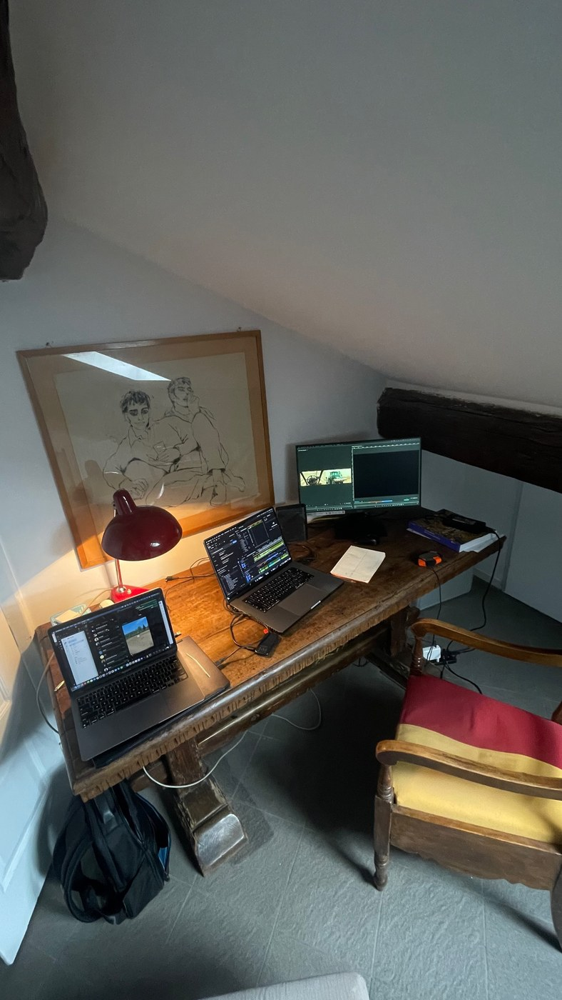

Emanuele Passilongo. 24.03.2000, Verona.
Editor and graphic designer, based in Italy.
He graduated from Politecnico di Milano and from Luchino Visconti School of Cinema, in Milan. There he learned the fundamentals of typographic design and cinematic storytelling for audiovisual products.
In 2025, he started working as a freelance professional, editing for Harper’s Bazaar, l’Officiel, Fondazione Prada in Milan, Almine Rech galleries in Brussels, Hauser & Wirth in New York, and on several award-winning projects, including documentaries, fashion movies, music videos, short films and commercials.
In October 2025, he won the Best Editing Prize at the Rome International Fashion Film Festival.